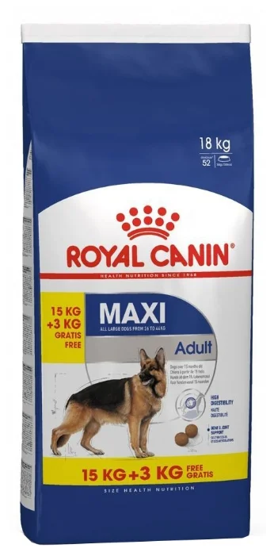

Вернуться назад
Корм для собак
Корм Royal Canin для взрослых собак крупных пород: 26-44 кг, 15 мес.- 5 лет, Maxi Adult
Краткое описание товара:
Корм для для взрослых собак крупных пород.
Перейти к полному описаниюХарактеристики товара:
| Животное |
|
| Особенности корма |
|
| Состав |
|
Полное описание товара:
Строение тела, особенности поведения и работа пищеварительной системы собак крупных пород в молодом возрасте - предмет особого внимания заводчиков и хозяев. Большие нагрузки, затраты энергии и потребность в оптимальном рационе полностью компенсируются кормом Роял Канин Макси Эдалт благодаря достигнутому балансу белков, растительного волокна и жирных кислот из разряда ОМЕГА-3, поддерживающих кожу животного в отличном состоянии.